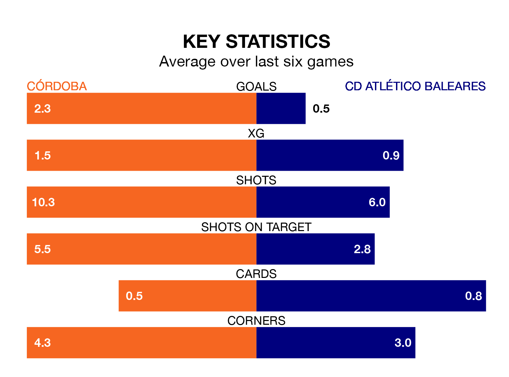

Relegation candidates CD Atlético Baleares face a challenge away against high-flying Córdoba at the Estadio Nuevo Arcángel on Sunday.
CD Atlético Baleares are 18th in the Primera Division RFEF Group 2 table, and have picked up five wins and six draws in their 26 games to date.
Córdoba, meanwhile, are third in the standings with 51 points, having won 15 and drawn six, and are nine points behind table-toppers CD Castellón.
With 48 goals in 26 games so far this season, Córdoba are the league's second-highest scorers with 1.8 goals per game. And they are conceding fewer than average, letting in 23 goals at a rate of 0.9 per game.
Atlético Baleares, meanwhile, are below average scorers, with 0.6 goals per game, compared to a league average of 1.1. They have conceded 1.7 goals per game.
In Carlos Marín Tomás, the home side can rely on one of the league's safest pair of hands. He has kept 10 clean sheets in his 21 appearances this season, and only one other 'keeper – Recreativo de Huelva's Rubén Ramos González – has been able to prevent the opposition scoring on more occasions in Primera Division RFEF Group 2.
In the visitors' net, Ramón Vila Rovira has five clean sheets in 14 games. He has conceded a goal every 61 minutes, more than twice as often as the 135 minutes between goals for Marín Tomás.
Córdoba are in good form in Primera Division RFEF Group 2, with four wins and two draws from their last six games.
With a win and a draw over that period, Atlético Baleares's form is much worse – they have taken four points from 18, compared to Córdoba's 14.
Córdoba's last match was on Sunday, a 3-2 win against Antequera CF, with Antonio Manuel Casas Marín (two) and Youssouf Diarra getting the goals for Córdoba.
Atlético Baleares lost 2-1 against Mérida AD last time out, also on March 3.
Updated: 09:34 (UTC), 08/03/24